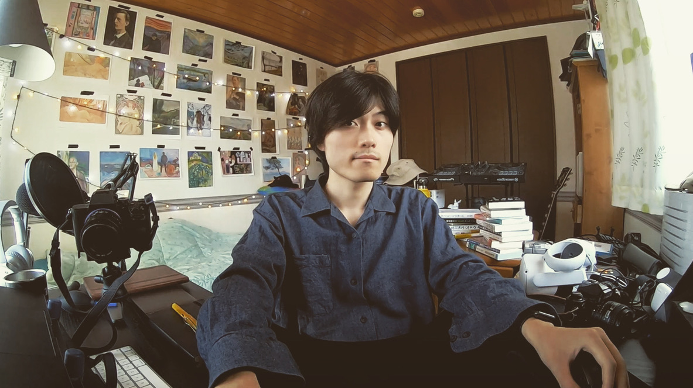

|  |
I am a forth-year Computer Science undergraduate student at University of Tsukuba, advised by Prof. Toshiyuki Amagasa and Assistant Prof. Yasuhiro Hayase.
Developing machine learning methods that can efficiently and effectively handle graph-structured complex data.
Leveraging large amounts of data to learn useful graph representations.
Applying graph representation learning to scientific domains, e.g., chemistry and biology.
stand.fm, Inc. (2021.03–)
CyberAgent Tech Kids, Inc. (2020.02–2021.03)
Programming Language: Python, R, Matlab, SQL, Java, Javascript, C, C++, HTML, CSS
Big Data & Machine Learning: MongoDB, Python, (eg. sckit-learn, numpy, pandas, matplotlib, spaCy
Data Science & Miscellaneous Technologies: Data science pipeline (cleansing, wrangling, visualization, modeling, interpretation), Statics, Time series, APIs, Spreadsheet, Git, Adobe Illustrator, Photoshop, Premiere Pro, AfterEffects, Audition
TOEIC: 855
SIGGRAPH Asia 2018 student volunteer.
I’m a photographer, videographer, writer, podcaster, etc. My works are here.
Email: eisaki [at] kde.cs.tsukuba.ac.jp
URL: https://eiskry.github.io/
Twitter: https://twitter.com/eiskry
Github: https://github.com/eiskry/
LinkedIn: https://www.linkedin.com/in/eisakiryota/